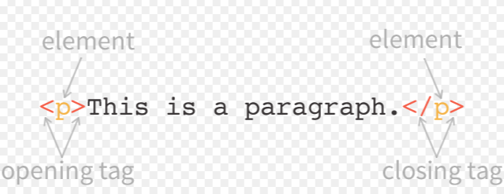

Html Part 2
Who Invented HTML?
HTML was developed in the late 1990s by Tim Berners-Lee. HTML stands for Hypertext Markup Language, which is used to create web pages. This scripting language sends signals that allow a web browser to display text, images, audio, and forms of different multimedia on a webpage. HTML is useful because it serves as a foundation that holds the content and design elements together. Allowing a web page to be structured and not be jumbled together. HTML uses elements or tags which allow contents to be structured and formatted on a webpage, thus allowing accessible use for internet users. These tags are interpreted by the web browser and are displayed in a format that is readable to the user.
Examples of tags and elements:
The hypertext markup language uses markup symbols/tags that appear between two pointed brackets: < >. These are some examples from module 1 (Zheng, pg 17): <body>, <h1>, <table>, <img>. HTML elements are individual components of HTML document denoted with HTML tags. HTML elements are used in the following example: <p> This is paragraph </p> (“paragraph” represents the element). This <p>, means denoting the opening of the tag and <p/>, denotes the closing of the tag. (Laurinavicius, 2022)
Image Ex. Tag/Element:
Front End Development
The development of HTML has shaped the current state of the web. In that it is used in other components, such as back and Front End Development. Front End Development is the art and science of creating the user-facing part of a website or web app. It's what allows a software to look pleasant. This component uses HTML along with CSS, and JavaScript, which are used to create the user interface and client-side functionality of web applications. Popular front-end frameworks include Angular.js, React.js, and Vue.js.
References and resources
© 2025 Npoyser.github.io/Site/